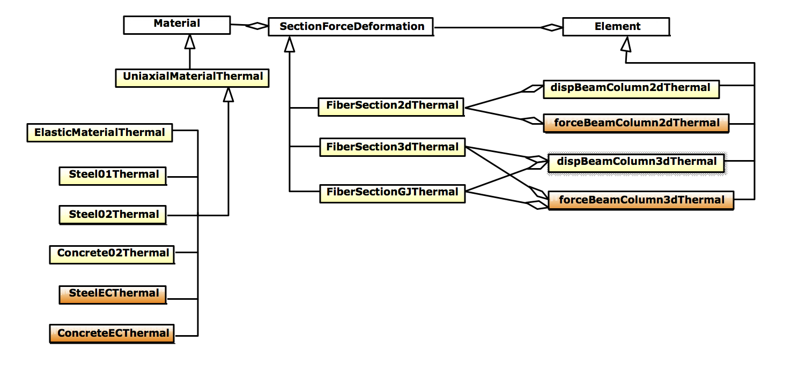
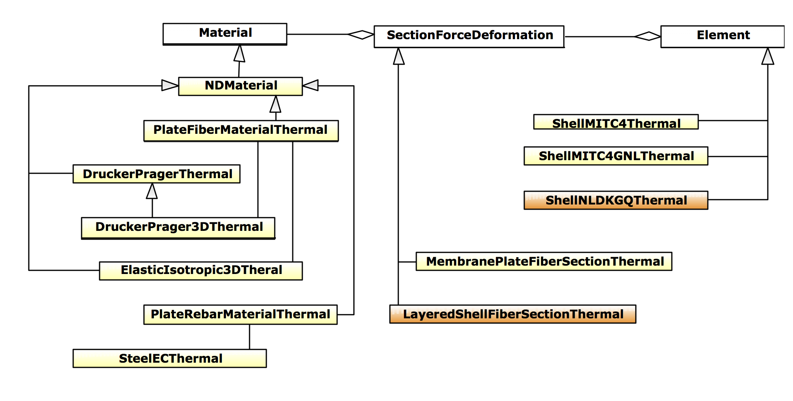
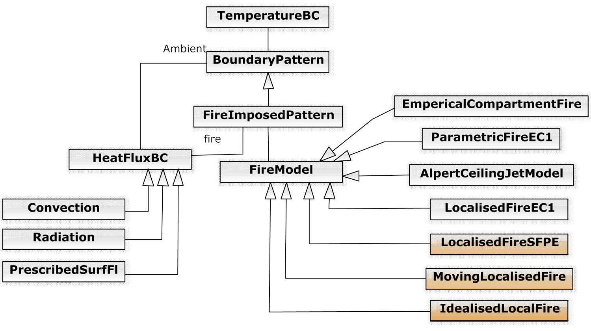

Classes for OpenSees Thermal
A decent amount of coding work has been carried out for the past more than 5 years, which aims to bring the capability of modelling 'structure in fire' into this open-source finite element computational framework.
Thermo-mechanical analysis
The classes associated with the thermo-mechanical beam elements are presented in the following figure, where the hierachy of these classes has been also illustrated.
As shown in the figure, a beam element shall be constructed with a few sections, while for each section it is descretised into a number of fibres. Thermo-mechanical materials shall be assigned to these fibres to determine the section state.
Currently there are couples of materials avaiable, which oould be used to describe a steel or a concrete material. Additionally, an elastic material
Heat transfer analysis
There are two projects involved with performing structural heat transfer analysis in OpenSees for fire. The fire project is seprately built to provide definitions of fire action which could be further extended to other advanced fire models in built evioronment. The hierachy of classes that are associated with fire project has been illustrated in Figure 3. In the mean time, the heat transfer project is responsible to perform the heat transfer analysis as it is designed to be consistent with the original OpenSees acrchitecture, which has been shown in Figure 4.
SIFBuilder classes
SIFBuilder is an onging project which was motivated by the need to a highly integrated computational tool for modelling structures in fire and was proposed on the basis of the numerous previous development in our group. The class hierachy is shown in Figure 6.
This page is created by Liming Jiang, 2016